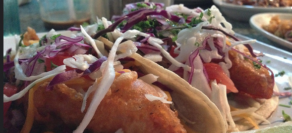

Savory Deviate Delight

Description
Eating a Savory Deviate Delight randomly has one of these two effects:
- Flip Out - a buff that changes the character model into a ninja for 60 minutes. The ninja is a human dressed entirely in black with a black bandana across its face. (This transformation looks very similar to a human dressed in the Defias Leather armor set, with a black bandana rather than a red bandana)
- Yaaarrrr - this buff transforms the character into a human pirate for 60 minutes.
Materials required:
Steps:
- Gring mobs in the Barrens for hours
- Loot recipe if/when it drops
- Train cooking to 85
- Combine materials list above near a fire
Back to home